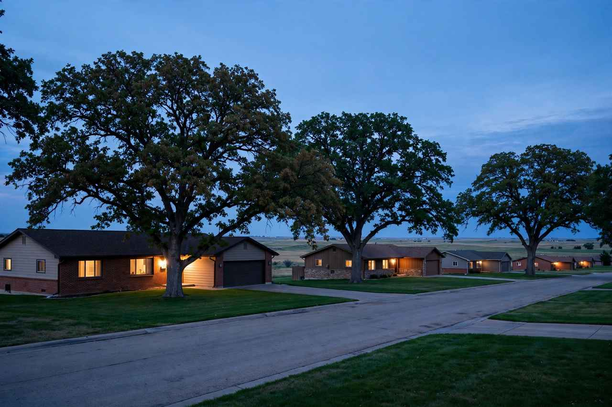

Rodent Control · Bellwood, NE
Same-Day Rodent Control in Bellwood, NE
Murvo delivers same-day rodent control in Bellwood for rats and mice in attics, walls, kitchens, and crawl spaces. Local crews start with a thorough inspection, then remove, exclude, and monitor until the problem is solved. You approve one flat-rate price in writing before any work starts, and every job carries a written guarantee across Butler County. Crews route daily across Butler County - 1 ZIP codes covered, including 68624.
24/7Availability
1ZIP codes covered
Same-dayResponse
Licensed · Upfront options · Written guarantees · Fully insured
Bellwood at a glance
Local Rodent Control for Bellwood, NE.
Butler County
Countyeastern Nebraska
RegionLincoln · 47 mi
Nearest metro46 miles northwest of Lincoln
From Lincoln1
ZIP codes covered Service by service in Bellwood
Rodent Control Services Available in Bellwood
The full range of residential and commercial rodent services in Bellwood and Butler County - built around the species and housing here, from emergency removal and same-day control to exclusion, proofing, trapping, cleanup, and damage repair. Every service below is quoted flat-rate in writing and backed by our workmanship guarantee.
- 01Rodent Control↗
- 02Rodent Inspection↗
- 03Rodent Removal↗
- 04Rodent Exclusion↗
- 05Rodent Proofing↗
- 06Rat Control↗
- 07Mice Control↗
- 08Mouse Removal↗
- 09Rat Removal↗
- 10Rodent Trapping↗
- 11Rodent Baiting↗
- 12Rodenticide Application↗
- 13Attic Rodent Removal↗
- 14Crawl Space Rodent Removal↗
- 15Wall Rodent Removal↗
- 16Kitchen Rodent Control↗
- 17Garage Rodent Control↗
- 18Commercial Rodent Control↗
- 19Residential Rodent Control↗
- 20Emergency Rodent Removal↗
- 21Same-Day Rodent Control↗
- 22Rodent Damage Repair↗
- 23Rodent Waste Cleanup↗
- 24Rodent Disinfection↗
- 25Rodent Odor Removal↗
- 26Dead Rodent Removal↗
- 27Rodent Dropping Cleanup↗
- 28Rodent Exclusion for Roofs↗
- 29Rodent Exclusion for Vents↗
- 30Rodent Exclusion for Chimneys↗
Rodent Control in Bellwood
Rodent Control in Bellwood
In vintage duplexes and stone homes, brick bungalows, older single-family homes, and farm and rural properties, rodents rarely use the front door. They follow basement foundations, alley-facing garage doors, sewer laterals, and gaps around utility lines and sills, settle where it stays warm, and expand from there across Butler County homes. Our rodent control pairs careful identification of Norway rat (Rattus norvegicus) and House mouse (Mus musculus) with trapping, sealing, and monitoring, handled by licensed and insured technicians who document each stage for you.
When you need rodent control in Bellwood, the job starts with what is actually happening in your part of Butler County. Murvo crews work Bellwood every week, so they know how Norway rat (Rattus norvegicus) and House mouse (Mus musculus) behave around vintage duplexes and stone homes, brick bungalows, older single-family homes, and farm and rural properties here - and where they get in: basement foundations, alley-facing garage doors, sewer laterals, and gaps around utility lines and sills. We arrive equipped for the full job, confirm the flat rate in writing before work begins, and cover the whole Bellwood area, including Richland, David City. No call-center runaround and no open-ended hourly billing - just a local crew, a clear plan, and a written quote you approve first. Homes near Octavia tend to show activity first in Bellwood, which is why inspections start with basement foundations, alley-facing garage doors, sewer laterals, and gaps around utility lines and sills.
The pattern in Butler County is predictable, so the response should be methodical. First comes identification, because Norway rat (Rattus norvegicus) and House mouse (Mus musculus) nest and feed in different places. Traps then go where travel is proven, not where it is convenient, and catches are logged by location. Sealing follows only after activity drops, using materials matched to each opening. Finally, monitoring stays in place long enough to catch a late survivor or a new arrival, and those readings decide when the program closes. That discipline is what turns a busy first week into a genuinely quiet second month for the household.
After you book, we confirm a time window and your background-checked technician arrives in a marked vehicle with identification. You receive a flat-rate written quote before any work starts. Once approved, trapping and sealing begin, and follow-up visits are scheduled before we leave, with the guarantee in writing. They walk the property with you, inspect inside and out, and explain what they find with photos. No work begins without your approval.
In most of Bellwood, we can offer a same-day appointment for rodent control, and our lines are open 24/7 for urgent cases like scratching in the walls or a rodent in a living area. Your technician inspects first, explains the plan, and quotes a flat rate in writing before any work begins, so help starts fast without surprises. If you are seeing signs now, an inspection this week is the fastest way to know which situation you are in.
The honest answer is that it depends on species, activity level, and how much sealing your home needs, which is why Murvo inspects first and then gives you a flat-rate quote in writing. For national context only, Angi's 2026 data averages rat and mouse removal and control at $396, typically $189 to $655; that is not a Murvo price, and your written quote is the figure you pay.
Rodent Inspection in Bellwood
Rodent Inspection in Bellwood
In Butler County, vintage duplexes and stone homes, brick bungalows, older single-family homes, and farm and rural properties often hide entry gaps that stay invisible from ground level: lifted shingles, unsealed pipe penetrations, and garage door corners where Norway rat (Rattus norvegicus) and House mouse (Mus musculus) slip through. A Murvo rodent inspection covers the roofline, foundation, attic, and crawl space in one visit, so you learn exactly where rodents get in and what closing each gap involves.
In Bellwood, rodent inspection is not a generic spray-and-go service. Rodents exploit basement foundations, alley-facing garage doors, sewer laterals, and gaps around utility lines and sills in vintage duplexes and stone homes, brick bungalows, older single-family homes, and farm and rural properties, and a fix that ignores those routes does not last. Murvo's Bellwood team inspects first, shows you the evidence - droppings, gnaw marks, entry gaps - and then lays out the work with a flat-rate written quote. We serve all of Butler County from Bellwood, including Richland, David City, and every job is covered by our written workmanship guarantee. Seasonal timing matters for rodent inspection in Bellwood: rodents surge in Bellwood from October through April.
Think of the inspection as three passes. The interior pass covers attic insulation, crawl-space corners, and kitchen voids for droppings, nests, and gnawing. The review pass brings it together: species, likely numbers, contamination, and the order in which fixes should happen. Each pass is photographed, and nothing is recommended without evidence from one of those passes to support it. The exterior pass checks siding, vents, pipe entries, and roof junctions for gaps and rub marks. The report separates what rodents are doing now from what the structure merely allows them to do later.
After booking, we confirm your time window by text or call. Before leaving, they review photos and priorities with you, leave the written findings, and schedule any follow-up work you approve. On arrival, your background-checked technician checks in, protects floors and access points, and works through a set inspection checklist inside and out. The inspection itself is backed by licensed, insured service and our written workmanship guarantee on quoted work.
You do not have to wait days for answers in Bellwood. Same-day rodent inspection appointments are available in most areas, urgent calls are taken 24/7, and most home inspections take under an hour. You finish the visit with photos, written findings, and flat-rate pricing for anything we recommend. The written quote for your Bellwood property will spell out exactly which of these applies before any work starts.
Your exact rodent inspection price is confirmed before we visit, and any follow-up work is quoted as a flat rate in writing after the inspection — no hourly billing. For context, Angi's 2026 data puts a professional rodent inspection nationally at $100 to $200, often credited toward the job if you proceed.
Rodent Removal in Bellwood
Rodent Removal in Bellwood
A removal visit should solve a health concern, not create one. Murvo technicians wear protective equipment, bag and remove contaminated material safely, and keep children and pets away from working areas. We explain each stage in plain language, confirm when rooms are safe to use again, and back the finished job with a written workmanship guarantee.
Homeowners in Bellwood call Murvo for rodent removal because the problem here is specific: Norway rat (Rattus norvegicus) pressure around vintage duplexes and stone homes, brick bungalows, older single-family homes, and farm and rural properties, tight access at basement foundations, alley-facing garage doors, sewer laterals, and gaps around utility lines and sills, and activity that follows the local season. Our Butler County crews diagnose the real source before recommending work, explain the options in plain language, and quote one flat rate in writing. Across Bellwood - including Richland, David City - every visit is backed by licensed, insured technicians and our written workmanship guarantee. Coverage for rodent removal spans 1 ZIP codes in Butler County, including 68624.
We favor trap-based, no-poison removal first where practical, which is safer around children and pets and avoids animals dying in hidden voids. Traps are matched to the species and setting, placed where droppings and rub marks show real travel routes, then cleared and reset until numbers reach zero. Dead animals in inaccessible places are located and retrieved before odor develops, contaminated nesting material is removed, and sealing recommendations are prioritized so the route indoors closes permanently. Monitoring then confirms the home stays clear.
Once removal is underway, expect short, predictable visits. Your technician checks each mapped trap, removes catches hygienically, resets what is still needed, and updates the record with you. When catches reach zero, monitoring confirms it, sealing is discussed, and the job closes with a walkthrough and your guarantee paperwork in hand before we leave. At close, prevention advice is tailored to what actually attracted rodents to your property, not copied from a generic checklist.
For active infestations in Bellwood, rodent removal can usually start the same day you call, and our team answers 24/7 when a rodent is loose in a living area. The first visit confirms activity and sets traps straight away; return visits then clear and reset them until monitoring shows the property is completely clear. That is also why Murvo pairs removal with exclusion in Bellwood - treating the animal without closing basement foundations, alley-facing garage doors, sewer laterals, and gaps around utility lines and sills rarely lasts.
Cost depends on the species, how many animals are active, and how much sealing the home needs afterwards, so Murvo inspects first and quotes one flat rate in writing. For national context only, Angi's 2026 data averages rat and mouse removal at $396, typically $189 to $655. That benchmark is not a Murvo price; your written quote is the exact figure.
Rodent Exclusion in Bellwood
Rodent Exclusion in Bellwood
What makes sealing permanent rather than cosmetic? Material rodents cannot chew, fitted so weather cannot lift it. Murvo uses copper mesh, hardware cloth, and metal flashing where each belongs, installed by licensed and insured crews. Every finished seal is photographed, walked through with you, and covered by a written workmanship guarantee.
Homeowners in Bellwood call Murvo for rodent exclusion because the problem here is specific: Norway rat (Rattus norvegicus) pressure around vintage duplexes and stone homes, brick bungalows, older single-family homes, and farm and rural properties, tight access at basement foundations, alley-facing garage doors, sewer laterals, and gaps around utility lines and sills, and activity that follows the local season. Our Butler County crews diagnose the real source before recommending work, explain the options in plain language, and quote one flat rate in writing. Across Bellwood - including Richland, David City - every visit is backed by licensed, insured technicians and our written workmanship guarantee. Around Octavia, Rising City, Schuyler, the pattern is similar: House mouse (Mus musculus) finds basement foundations, alley-facing garage doors, sewer laterals, and gaps around utility lines and sills first, and lasting rodent exclusion has to close those routes.
The sequence matters as much as the materials. A later monitoring check tests the work honestly, revisiting each sealed point for fresh rub marks, droppings, or gnawing. Active openings are closed first, inactive weaknesses next, and purely cosmetic gaps last, so protection arrives where pressure is highest. Photographs record every finished seal with its location, building a reference you keep. Because a properly sealed home needs far less ongoing treatment, exclusion also lowers long-term reliance on bait. The final monitoring visit therefore matters as much as the sealing day itself, and its findings are shared.
Before sealing day, confirm pets are secured and access to the roofline and foundation is clear. The crew then works through the agreed list, checks that no animals remain inside, and fits each seal cleanly. Afterwards you receive the photographs, the guarantee, and a date for the follow-up check that confirms everything is holding as intended. If monitoring ever finds fresh activity at a sealed point, that written inventory tells us exactly what to inspect first.
Rodent exclusion in Bellwood usually starts with a survey visit we can often schedule the same day you call. Sealing itself is booked as soon as any active animals are cleared, because nothing is sealed inside. Most homes are fully sealed within days, not weeks, and urgent entry points near wiring or food areas are prioritized first. Murvo's Bellwood crews explain the finding either way, and the flat-rate quote leaves the decision with you.
For national context, Angi's 2026 data puts basic exclusion at $200 to $600, depending on access and the number of openings. That is a benchmark, not a Murvo price. After surveying your Bellwood home, we list every opening that needs sealing and quote one flat rate in writing, so you pay for the work your property actually needs and nothing more.
Rodent Proofing in Bellwood
Rodent Proofing in Bellwood
As colder weather approaches Butler County, rodents actively hunt for warm indoor shelter, and unsealed homes are found fast. A Murvo rodent proofing survey checks the roofline, vents, utility entries, and doors before that rush begins. Because proofing prevents infestations instead of reacting to them, it reduces reliance on baits and is backed by our written workmanship guarantee.
When you need rodent proofing in Bellwood, the job starts with what is actually happening in your part of Butler County. Murvo crews work Bellwood every week, so they know how Norway rat (Rattus norvegicus) and House mouse (Mus musculus) behave around vintage duplexes and stone homes, brick bungalows, older single-family homes, and farm and rural properties here - and where they get in: basement foundations, alley-facing garage doors, sewer laterals, and gaps around utility lines and sills. We arrive equipped for the full job, confirm the flat rate in writing before work begins, and cover the whole Bellwood area, including Richland, David City. No call-center runaround and no open-ended hourly billing - just a local crew, a clear plan, and a written quote you approve first. In Bellwood, rodent proofing calls most often involve vintage duplexes and stone homes, brick bungalows, older single-family homes, and farm and rural properties, where basement foundations, alley-facing garage doors, sewer laterals, and gaps around utility lines and sills decide whether the fix holds.
Proofing divides naturally into structure, surroundings, and habits. Habits means securing pet food, bird seed, and stored produce so the property stops advertising itself. Structure means sealing utility entries, screening vents and chimneys, and fitting sweeps where doors leak light. Surroundings means trimming branches back from the roofline, moving clutter and timber away from walls, and reducing sheltered harborage. Technicians assess all three layers in one survey and rank the combined findings by impact, not by what is easiest to sell.
After booking, we confirm your appointment and any access needs, such as gates or attic hatches. Before leaving, you walk the finished sealing together, receive care and storage advice, and confirm the guarantee. Later re-checks verify sweeps, screens, and seals are still holding. On the day, your background-checked technician completes the survey and agreed proofing work in one visit where possible. Nothing is added to your bill without approval first.
Rodent proofing is preventive, so there is rarely a rush, but surveys in Bellwood can often be arranged the same day you call, and always within a few days. Most proofing work is completed in a single visit once you approve the plan, and booking before colder weather gives your home protection ahead of the seasonal rush indoors. Around Bellwood, vintage duplexes and stone homes, brick bungalows, older single-family homes, and farm and rural properties give rodents the most cover, which is why entry points get checked before traps are set.
We survey your Bellwood property first, separate the quick wins you can handle yourself from the specialist sealing, and quote the professional work as one flat rate in writing so spending can be staged. Angi's 2026 national context puts exclusion, the core of proofing, at $200 to $600 for basic work — a benchmark only, not a Murvo price.
Rat Control in Bellwood
Rat Control in Bellwood
Rat problems escalate quietly across Butler County: gnawed wiring, contaminated insulation, and droppings spreading through storage areas before anyone sees an animal. Murvo answers with same-day appointments where available and a 24/7 line for urgent cases. Every visit is documented, trapped rats are removed hygienically, and the program finishes with exclusion so the next group cannot simply move in.
Homeowners in Bellwood call Murvo for rat control because the problem here is specific: Norway rat (Rattus norvegicus) pressure around vintage duplexes and stone homes, brick bungalows, older single-family homes, and farm and rural properties, tight access at basement foundations, alley-facing garage doors, sewer laterals, and gaps around utility lines and sills, and activity that follows the local season. Our Butler County crews diagnose the real source before recommending work, explain the options in plain language, and quote one flat rate in writing. Across Bellwood - including Richland, David City - every visit is backed by licensed, insured technicians and our written workmanship guarantee. Coverage for rat control spans 1 ZIP codes in Butler County, including 68624.
Control starts with species and route identification, because roof rats and Norway rats behave and enter very differently. Trapped rats are removed hygienically, and each visit is documented with locations and counts. We then pair the program with roofline and entry-point exclusion, plus attic removal and cleanup where nests are found overhead. Technicians pre-bait unset traps along proven runways so wary rats feed confidently, then set them and return to check, clear, and adjust placements until activity stops. Progress is visible at every visit.
Call and describe where signs are strongest; that directs the first inspection. Your technician maps routes and harborage, explains the pre-baiting plan honestly, including why results build over days, and provides the written quote. Approval starts the program the same visit, with follow-up checks booked ahead so momentum never depends on you calling back. You will know after each visit what was caught, where placements changed, and what the next check is specifically looking for.
Call day or night — urgent rat control calls in Bellwood are answered 24/7, and a same-day inspection can usually start the program. Pre-baiting begins on that first visit once you approve the written quote, traps are set when rats are feeding confidently, and scheduled checks continue until activity stops. Around Bellwood, vintage duplexes and stone homes, brick bungalows, older single-family homes, and farm and rural properties give rodents the most cover, which is why entry points get checked before traps are set.
Rat work varies with species, colony size, and how many entry points need sealing, so Murvo inspects first and quotes one flat rate in writing. For national context only, Angi's 2026 data averages rat control and removal at $396, typically $189 to $655. That benchmark is not a Murvo price; the written quote for your Bellwood home is the exact figure you pay.
Mice Control in Bellwood
Mice Control in Bellwood
One mouse seen in a Bellwood kitchen usually means more are nesting unseen, and mice breed quickly enough that a small problem becomes a large one within weeks. Murvo offers same-day appointments where available, builds the program around trapping and sealing rather than baits, and backs the finished work with a written workmanship guarantee for lasting peace of mind.
Homeowners in Bellwood call Murvo for mice control because the problem here is specific: Norway rat (Rattus norvegicus) pressure around vintage duplexes and stone homes, brick bungalows, older single-family homes, and farm and rural properties, tight access at basement foundations, alley-facing garage doors, sewer laterals, and gaps around utility lines and sills, and activity that follows the local season. Our Butler County crews diagnose the real source before recommending work, explain the options in plain language, and quote one flat rate in writing. Across Bellwood - including Richland, David City - every visit is backed by licensed, insured technicians and our written workmanship guarantee. The Bellwood crews who handle mice control also handle the follow-through - proofing, cleanup, and monitoring - so one visit can close the whole problem.
Hygiene is part of control, not an afterthought. The program favors traps over bait throughout, which keeps family kitchens safer and makes every result countable and visible. Droppings in cabinets are never dry-swept; surfaces are disinfected first, following careful practice, so contamination is not pushed into the air, and nesting debris is bagged and removed. Technicians also review how food, pet supplies, and bird seed are stored, since an open supply restarts activity quickly. Follow-up monitoring then verifies the kitchen, attic, and voids together, rather than treating each room in isolation.
After booking, we confirm your time window and any rooms where you have seen droppings or heard scratching. On arrival, your background-checked technician inspects, sets clustered traps at proven hotspots, and talks you through pet and child safety around placements. Return visits clear and reset traps, then sealing is completed and the written guarantee confirmed at the final check. You approve the plan and price before trapping starts. No surprises are added later.
Mice programs move quickly in Bellwood: a mice control survey can often be arranged the same day you call, and traps are set on that first visit once you approve the quote. Because mice investigate new objects fast, catches usually begin quickly, and scheduled check visits follow until a final confirmation shows activity has fully stopped. In Butler County, most cases involve the Norway rat (Rattus norvegicus) and the House mouse (Mus musculus), so the inspection focuses on their routes first.
Mouse work is priced by the number of rooms affected and the amount of sealing involved, so Murvo surveys first and quotes one flat rate in writing. For national context only, Angi's 2026 data averages rat and mouse control and removal at $396, typically $189 to $655. That is not a Murvo price; your written quote is exact.
Mouse Removal in Bellwood
Mouse Removal in Bellwood
Most Bellwood removal jobs begin in one room and end with evidence in three, because mice nest close to food and travel widely at night. Murvo surveys room by room, runs traps at every active site, and seals behind the work. The full program is one flat-rate written quote.
When you need mouse removal in Bellwood, the job starts with what is actually happening in your part of Butler County. Murvo crews work Bellwood every week, so they know how Norway rat (Rattus norvegicus) and House mouse (Mus musculus) behave around vintage duplexes and stone homes, brick bungalows, older single-family homes, and farm and rural properties here - and where they get in: basement foundations, alley-facing garage doors, sewer laterals, and gaps around utility lines and sills. We arrive equipped for the full job, confirm the flat rate in writing before work begins, and cover the whole Bellwood area, including Richland, David City. No call-center runaround and no open-ended hourly billing - just a local crew, a clear plan, and a written quote you approve first. Coverage for mouse removal spans 1 ZIP codes in Butler County, including 68624.
The survey comes first, and it is deliberately thorough. Traps are then set in multiples at proven points, because a single trap rarely reflects colony size. Returns are scheduled tightly: catches are cleared, traps reset, and numbers tracked until they fall to zero and stay there across a confirming check before sealing begins. Lofts, under-floor voids, cabinets, and the spaces behind kitchen units are checked for nests, droppings, and stored food caches. Photographs of nesting sites help here, because they reveal how far activity had spread before trapping began.
As catches fall, the focus shifts in order: final clearing, disinfection of affected areas, then sealing of access points. Seasonal proofing can be arranged if your property has repeated fall problems. Your technician reviews the catch record with you at sign-off, confirms which rooms are fully safe to use, and leaves prevention advice plus guarantee paperwork. If signs reappear during monitoring, placements are restored under the same agreed program rather than starting a new conversation from scratch.
In Bellwood, mouse removal can often begin the same day you call, especially where mice are active in kitchens or living areas. The first visit surveys nesting sites and sets traps immediately after you approve the quote; because mice investigate traps quickly, catches usually start fast, and return visits continue until numbers reach zero. That is also why Murvo pairs removal with exclusion in Bellwood - treating the animal without closing basement foundations, alley-facing garage doors, sewer laterals, and gaps around utility lines and sills rarely lasts.
Rooms involved and sealing needed determine the cost of removal, so we survey first and agree a flat rate in writing before work begins. As national context only, Angi's 2026 data averages rat and mouse removal at $396, with a typical range of $189 to $655; that benchmark is not a Murvo price, and your written quote covers your exact program.
Rat Removal in Bellwood
Rat Removal in Bellwood
Roof rats and Norway rats behave and enter very differently, and in Bellwood the distinction decides where traps go and which gaps get sealed. vintage duplexes and stone homes, brick bungalows, older single-family homes, and farm and rural properties reached through basement foundations, alley-facing garage doors, sewer laterals, and gaps around utility lines and sills can hide attic colonies or basement harborage for months. Our licensed, background-checked technicians trace the full route, remove the colony, and sanitize contaminated areas where nests were found.
Homeowners in Bellwood call Murvo for rat removal because the problem here is specific: Norway rat (Rattus norvegicus) pressure around vintage duplexes and stone homes, brick bungalows, older single-family homes, and farm and rural properties, tight access at basement foundations, alley-facing garage doors, sewer laterals, and gaps around utility lines and sills, and activity that follows the local season. Our Butler County crews diagnose the real source before recommending work, explain the options in plain language, and quote one flat rate in writing. Across Bellwood - including Richland, David City - every visit is backed by licensed, insured technicians and our written workmanship guarantee. Coverage for rat removal spans 1 ZIP codes in Butler County, including 68624.
Removal stays trap-led and exclusion-backed throughout. Locked bait stations appear only where a site genuinely justifies them, positioned away from pets and food, labeled, and monitored on schedule; loose bait is never used. After clearance, contaminated areas are sanitized carefully, with surfaces disinfected before cleaning and droppings never dry-swept. Monitoring devices and a documented final walkthrough then prove activity has ended, and proofing advice covers drains, vents, and rooflines going forward. That written evidence stays with you, including the monitoring readings that supported the decision to sign off.
After booking, we confirm access needs for the attic, basement, or outbuildings so no time is wasted. On the first visit, your background-checked technician sets out the plan and begins pre-baiting once you approve the written quote. Follow-up visits run on schedule until catches stop, then sealing and sanitation are completed. A final monitoring period confirms the home is clear before sign-off. Progress is reported to you after every single visit.
Rats in a living area cannot wait for a routine slot. In Bellwood, rat removal can usually start the same day you call and our line answers 24/7 for urgent cases. Pre-baiting starts on the first visit after you approve the written quote, traps are set once rats feed confidently — typically within days — and frequent returns run until monitoring confirms the colony is gone. Murvo's Bellwood crews explain the finding either way, and the flat-rate quote leaves the decision with you.
Colony size, access, and the sealing needed afterwards drive the price, so Murvo assesses the property first and quotes a flat rate in writing covering the full program. Angi's 2026 data, for national context only, averages rat removal at $396 and typically ranges from $189 to $655; that is a benchmark, not a Murvo price.
Rodent Trapping in Bellwood
Rodent Trapping in Bellwood
For Bellwood households who want a poison-free route, trapping delivers measurable results without chemicals in the home. Each catch is recorded by location, building a picture of movement through vintage duplexes and stone homes, brick bungalows, older single-family homes, and farm and rural properties via basement foundations, alley-facing garage doors, sewer laterals, and gaps around utility lines and sills until numbers fall to zero. Murvo's licensed, insured technicians then recommend exclusion sealing and cleanup, and the whole program is backed by a written workmanship guarantee.
In Bellwood, rodent trapping is not a generic spray-and-go service. Rodents exploit basement foundations, alley-facing garage doors, sewer laterals, and gaps around utility lines and sills in vintage duplexes and stone homes, brick bungalows, older single-family homes, and farm and rural properties, and a fix that ignores those routes does not last. Murvo's Bellwood team inspects first, shows you the evidence - droppings, gnaw marks, entry gaps - and then lays out the work with a flat-rate written quote. We serve all of Butler County from Bellwood, including Richland, David City, and every job is covered by our written workmanship guarantee. Homes near Octavia tend to show activity first in Bellwood, which is why inspections start with basement foundations, alley-facing garage doors, sewer laterals, and gaps around utility lines and sills.
A trapping program starts with inspection: identifying the species, mapping runways, and finding where droppings and rub marks show real travel. Traps are set perpendicular to walls and along beams, pipes, and fence lines, matched to the setting. For rats, we pre-bait unset traps for several days, a step most DIY attempts skip, then set them for maximum effect. Mice receive clustered traps at hotspots. Technicians return on schedule to clear, reset, and record every catch. Placements shift as activity patterns change.
Call to book, and a first visit can often happen the same day. Nothing proceeds without approval. Scheduled returns then clear, reset, and record catches, sharing the running total with you at every single visit. That visit maps activity, places or pre-baits devices, and produces your written quote for the full program including checks. Catch records are never an afterthought; they are the evidence that decides when trapping ends and monitoring alone takes over.
In Bellwood, a rodent trapping program can usually start the same day you call, with traps placed or pre-baiting begun on the first visit after you approve the quote. Mice often investigate within the first night, while wary rats need a few days of pre-baiting before traps are set. Scheduled checks then keep the program moving until numbers reach zero. A Bellwood inspection confirms it on site - dropping size, gnaw marks, and entry points tell the story quickly.
Rather than charging by the trap or by the visit, Murvo inspects first and quotes rodent trapping as one flat rate in writing for the complete program, including its check visits. Price depends on species, activity level, and how many checks are needed, and there is no hourly billing at any stage, so there are no per-visit surprises.
Rodent Baiting in Bellwood
Rodent Baiting in Bellwood
Baiting done badly is a risk to pets, children, and wildlife, so Murvo never uses loose bait in Bellwood homes. Every station is tamper-resistant and locked, positioned along runways away from play areas and food, and paired with trapping and exclusion so bait is never the only step. One flat-rate written quote covers placement and monitoring.
When you need rodent baiting in Bellwood, the job starts with what is actually happening in your part of Butler County. Murvo crews work Bellwood every week, so they know how Norway rat (Rattus norvegicus) and House mouse (Mus musculus) behave around vintage duplexes and stone homes, brick bungalows, older single-family homes, and farm and rural properties here - and where they get in: basement foundations, alley-facing garage doors, sewer laterals, and gaps around utility lines and sills. We arrive equipped for the full job, confirm the flat rate in writing before work begins, and cover the whole Bellwood area, including Richland, David City. No call-center runaround and no open-ended hourly billing - just a local crew, a clear plan, and a written quote you approve first. The Bellwood crews who handle rodent baiting also handle the follow-through - proofing, cleanup, and monitoring - so one visit can close the whole problem.
Baiting here sits inside a wider sequence, never outside it. Exclusion work seals the structure, trapping clears animals already indoors, and only then do locked stations address the outdoor population along fence lines and runways. Each station is anchored, labeled, and photographed, with its location recorded. Monitoring visits log consumption precisely, and falling consumption, confirmed by other signs, decides when stations are reduced and finally removed altogether. Inspection maps activity and identifies where pressure originates. Those logs become especially important when activity fades, because several quiet checks must agree before stations come out.
Booking rodent baiting in Bellwood starts with an inspection, not a station. Monitoring visits are scheduled before we leave, and stations come out once activity is confirmed clear. Your technician maps activity, reviews pet, child, and wildlife concerns with you, and confirms a flat-rate written quote before anything is placed. Approved stations are installed locked and labeled the same visit, with locations photographed for you. Your written guarantee covers the full program.
Deliberate setup matters more than speed with rodent baiting, but the first step is still fast: an inspection in Bellwood can often be arranged the same day you call. Stations are placed only after activity is mapped and you approve the written quote and each location, then monitoring runs on a fixed schedule until consumption stops and activity is confirmed clear. The written quote for your Bellwood property will spell out exactly which of these applies before any work starts.
Baiting cost depends on how many locked stations your property needs and how long monitoring runs, so Murvo inspects and maps activity first, then quotes one flat rate in writing covering placement and scheduled checks. There are no per-visit surprises, and because our approach is exclusion-first, the goal is always to reduce and eventually remove stations, not maintain them forever.
Rodenticide Application in Bellwood
Rodenticide Application in Bellwood
Rodenticides are powerful products that can harm pets, children, and wildlife if misused, so Murvo treats rodenticide application in Bellwood as a last resort, never a first step. Products are placed only inside tamper-resistant locked stations, never as loose pellets or open trays, and only after inspection confirms trapping and exclusion alone will not solve the problem.
Homeowners in Bellwood call Murvo for rodenticide application because the problem here is specific: Norway rat (Rattus norvegicus) pressure around vintage duplexes and stone homes, brick bungalows, older single-family homes, and farm and rural properties, tight access at basement foundations, alley-facing garage doors, sewer laterals, and gaps around utility lines and sills, and activity that follows the local season. Our Butler County crews diagnose the real source before recommending work, explain the options in plain language, and quote one flat rate in writing. Across Bellwood - including Richland, David City - every visit is backed by licensed, insured technicians and our written workmanship guarantee. Coverage for rodenticide application spans 1 ZIP codes in Butler County, including 68624.
The first decision is whether application is justified, and often it is not. Monitoring data then governs whether treatment continues, changes, or stops in favor of proofing alone. Inspection confirms species and activity, then trapping and exclusion are weighed honestly; if those methods can solve the problem safely, they are recommended instead. Where treatment is justified, stations are mapped, anchored, and labeled, products remain inside locked units at all times, and scheduled checks record amounts precisely. If consumption patterns look unusual, technicians investigate rather than simply refilling, because unexpected patterns can signal a different species.
After booking, we discuss children, pets, livestock, and wildlife at your property before the visit, so product decisions are informed from the start. On arrival, your background-checked technician inspects, talks you through the plan and label information, and only applies product once you approve the written quote. Scheduled checks follow, amounts are recorded and reported, and stations are removed when activity is confirmed clear. Safety information stays with you throughout the program.
In Bellwood, rodenticide application begins with an inspection we can often schedule the same day you call, because no responsible application happens without one. If treatment is justified and you approve the written quote, locked stations are installed on that visit. Monitoring then runs on schedule, and treatment stops as soon as data shows activity has ended. That is also why Murvo pairs removal with exclusion in Bellwood - treating the animal without closing basement foundations, alley-facing garage doors, sewer laterals, and gaps around utility lines and sills rarely lasts.
Application cost depends on the number of locked stations, the product required under Nebraska rules, and how long monitoring runs. Murvo inspects first, explains whether trapping or exclusion could avoid chemical control entirely, and then quotes one flat rate in writing before work begins. The quote covers scheduled monitoring visits, so there are no per-visit surprises later.
Attic Rodent Removal in Bellwood
Attic Rodent Removal in Bellwood
In vintage duplexes and stone homes, brick bungalows, older single-family homes, and farm and rural properties, attics reward rodents generously: warm insulation for nesting, quiet during daylight, and access through basement foundations, alley-facing garage doors, sewer laterals, and gaps around utility lines and sills that stays invisible from the ground across Butler County. Our technicians photograph nests, droppings, and gnawed cables, check for young, and examine adjoining crawl spaces so connected activity is not left behind.
In Bellwood, attic rodent removal is not a generic spray-and-go service. Rodents exploit basement foundations, alley-facing garage doors, sewer laterals, and gaps around utility lines and sills in vintage duplexes and stone homes, brick bungalows, older single-family homes, and farm and rural properties, and a fix that ignores those routes does not last. Murvo's Bellwood team inspects first, shows you the evidence - droppings, gnaw marks, entry gaps - and then lays out the work with a flat-rate written quote. We serve all of Butler County from Bellwood, including Richland, David City, and every job is covered by our written workmanship guarantee. Homes near Octavia tend to show activity first in Bellwood, which is why inspections start with basement foundations, alley-facing garage doors, sewer laterals, and gaps around utility lines and sills.
Attic work divides into clearing, closing, and confirming. Clearing means targeted traps set where droppings and runways concentrate, checked on schedule until catches end. Closing means roofline exclusion: metal mesh and sealed flashing at eaves, vents, and junctions, plus advice on branches bridging animals onto the roof. Confirming means monitoring traps left briefly after sealing, proving the space is empty. Photographs document conditions at each stage, including insulation damage and any wiring concerns found overhead. Before-and-after photographs make that sequence visible, including exactly which roofline openings were open at the start.
After booking, we confirm safe attic access and any pets or stored items to work around. A final monitoring check and walkthrough confirm the result before we close the job. On arrival, your background-checked technician inspects, explains the plan in plain language, and starts trapping once you approve the written quote. Follow-up visits are booked ahead to clear traps and complete sealing. Insulation and wiring findings are reported to you too.
Overhead scratching in Bellwood often gets a same-day attic rodent removal visit, and attics with chewed wiring are prioritized because of the fire risk. Trapping starts on the first visit once you approve the written quote, checks run on schedule, and most attics are cleared and sealed within days. Monitoring stays in place briefly afterwards to confirm nothing remains inside. Murvo's Bellwood crews explain the finding either way, and the flat-rate quote leaves the decision with you.
Attic costs depend on how many animals are active, how much sealing the roofline needs, and whether contaminated insulation requires cleanup, so Murvo inspects first and quotes one flat rate in writing. That quote covers the removal program described, with cleanup options priced separately in writing before you decide, so there are no surprises once work is underway.
Crawl Space Rodent Removal in Bellwood
Crawl Space Rodent Removal in Bellwood
Most Bellwood crawl-space problems surface indirectly: a smell through the floorboards, a torn vapor barrier, droppings found during unrelated repairs. Murvo inspects beneath the home, traps active animals there, and seals vents and foundation gaps. One flat-rate written quote is agreed before trapping starts below.
When you need crawl space rodent removal in Bellwood, the job starts with what is actually happening in your part of Butler County. Murvo crews work Bellwood every week, so they know how Norway rat (Rattus norvegicus) and House mouse (Mus musculus) behave around vintage duplexes and stone homes, brick bungalows, older single-family homes, and farm and rural properties here - and where they get in: basement foundations, alley-facing garage doors, sewer laterals, and gaps around utility lines and sills. We arrive equipped for the full job, confirm the flat rate in writing before work begins, and cover the whole Bellwood area, including Richland, David City. No call-center runaround and no open-ended hourly billing - just a local crew, a clear plan, and a written quote you approve first. Homes near Octavia tend to show activity first in Bellwood, which is why inspections start with basement foundations, alley-facing garage doors, sewer laterals, and gaps around utility lines and sills.
Cleanup beneath a home follows careful practice throughout. Technicians also trace connections upward through wall voids, checking whether activity reaches the attic, and report moisture issues with practical recommendations. Photographs of every finished seal accompany your guarantee paperwork, creating a record of exactly what was closed. Droppings and nesting debris are never dry-swept, since disturbing them can spread contamination; surfaces are disinfected first, then waste is bagged and removed by technicians wearing protective equipment. Vent and pier sealing is checked from inside the space, not assumed sound from a glance outside.
Before the visit, unlock crawl-space access and mention any known leaks or standing water. Your background-checked technician inspects with protective equipment, sets traps at active areas after approval, and books follow-up visits ahead. Sign-off includes a walkthrough of the documented results, photographs of finished sealing, and your guarantee confirmed in writing for the completed work. Moisture findings are included in the closing notes, since fixing leaks and standing water lowers rodent pressure long after removal ends.
For crawl space rodent removal in Bellwood, inspections are usually arranged within a few days — and sooner when odors are drifting into living areas or activity sounds heavy. Trapping begins on the first visit after you approve the written quote, clearance and sealing follow in sequence, and monitoring stays in place until the space below is confirmed quiet. That is also why Murvo pairs removal with exclusion in Bellwood - treating the animal without closing basement foundations, alley-facing garage doors, sewer laterals, and gaps around utility lines and sills rarely lasts.
Access, the number of vents and gaps to seal, and whether waste cleanup is required all shape crawl-space pricing, so Murvo inspects first and quotes one flat rate in writing. Cleanup options are priced in writing before you decide whether to include them, and there are no surprise charges for extra vents within the agreed scope.
Wall Rodent Removal in Bellwood
Wall Rodent Removal in Bellwood
Most Bellwood wall calls start at night, when scratching behind the drywall makes sleep impossible. Murvo locates the activity by listening, tracing entry routes, and using inspection cameras where access allows, then traps at void access points. A flat-rate written quote comes before any access work is considered.
Homeowners in Bellwood call Murvo for wall rodent removal because the problem here is specific: Norway rat (Rattus norvegicus) pressure around vintage duplexes and stone homes, brick bungalows, older single-family homes, and farm and rural properties, tight access at basement foundations, alley-facing garage doors, sewer laterals, and gaps around utility lines and sills, and activity that follows the local season. Our Butler County crews diagnose the real source before recommending work, explain the options in plain language, and quote one flat rate in writing. Across Bellwood - including Richland, David City - every visit is backed by licensed, insured technicians and our written workmanship guarantee. Seasonal timing matters for wall rodent removal in Bellwood: rodents surge in Bellwood from October through April.
Wall work follows Inspect, Remove, Exclude, Clean, and Monitor. Trapping is then placed at void access points to draw rodents out, and technicians return to clear traps and adjust positions if monitoring shows activity has moved to another void. We start by locating activity precisely, tracing entry routes from the roofline, baseboards, and pipe runs into the void, and using cameras where access allows. Only where an animal cannot be reached any other way do we agree a minimal, repairable access cut.
Book wall rodent removal in Bellwood and we will schedule a locating visit, often the same day for loud or persistent wall noise. Your technician traces the activity, explains exactly where the animal is traveling, and confirms a flat-rate written quote before any access work, so wall work never becomes an open-ended bill. Trapping and any agreed access follow, then sealing, sanitation, and monitoring complete the job. Your written guarantee covers the completed work.
In Bellwood, wall rodent removal locating visits are often available the same day you call, especially for persistent scratching keeping you awake. Trapping is set at access points on that first visit once you approve the written quote, and because rodents travel the void nightly, results usually follow within days, confirmed by quiet-wall checks before we sign off. In Butler County, activity follows the local season, so timing the work matters as much as the method.
Wall work pricing depends on how precisely activity can be located and whether a minimal access cut is needed, which is why Murvo locates the activity first and quotes a flat rate in writing. That way wall access work never becomes an open-ended bill, and the quote covers the trapping, sealing, and monitoring described in your plan.
Kitchen Rodent Control in Bellwood
Kitchen Rodent Control in Bellwood
Kitchens in vintage duplexes and stone homes, brick bungalows, older single-family homes, and farm and rural properties offer rodents food, water and warmth behind fridges, ovens and sinks. Murvo's kitchen rodent control in Bellwood starts behind those appliances, removes the animals without loose poison near food, and leaves simple hygiene notes covering bins, pet bowls and rarely moved appliances. Background-checked technicians carry out every visit.
In Bellwood, kitchen rodent control is not a generic spray-and-go service. Rodents exploit basement foundations, alley-facing garage doors, sewer laterals, and gaps around utility lines and sills in vintage duplexes and stone homes, brick bungalows, older single-family homes, and farm and rural properties, and a fix that ignores those routes does not last. Murvo's Bellwood team inspects first, shows you the evidence - droppings, gnaw marks, entry gaps - and then lays out the work with a flat-rate written quote. We serve all of Butler County from Bellwood, including Richland, David City, and every job is covered by our written workmanship guarantee. The Bellwood crews who handle kitchen rodent control also handle the follow-through - proofing, cleanup, and monitoring - so one visit can close the whole problem.
Cupboard hinges, kick plates and pipe collars often reveal more than the room itself. We examine those details first, then work outward into adjoining voids and the basement or garage beyond. Removal stays targeted and discreet. Afterward, sealing closes the routes we documented, surfaces touched by droppings receive proper cleaning, and we walk through small habits that help: lids sealed, spills wiped from hidden edges, and pet food lifted overnight. Monitoring points stay in place until repeat visits show the kitchen has gone quiet.
Tell us what you noticed, and we will schedule a visit that fits around meals and family routines. With your approval, trapping and sealing begin, followed by cleaning of affected areas. The technician inspects first, explains the findings in plain terms, and puts the price in writing. Later checks review traps and monitors, and we do not close the visit series until the kitchen shows no fresh signs of rodent activity at all.
You can reach us by phone 24/7, and reports of droppings close to food preparation surfaces are given priority when we schedule. A same-day visit in Bellwood may be possible in many cases, depending on technician availability. When you call, tell us what you found and we will offer the earliest appointment available. If you are seeing signs now, an inspection this week is the fastest way to know which situation you are in.
Cost depends on how many rodents are active, where they are entering, and how much sealing and cleanup the kitchen needs. Murvo inspects first, then gives one flat-rate written quote covering trapping, sealing and follow-up monitoring, with no hourly billing or add-on surprises. You approve the full price before any work begins, and the quote is backed by our written workmanship guarantee.
Garage Rodent Control in Bellwood
Garage Rodent Control in Bellwood
Boxes stacked against a wall make perfect cover. While the garage stays undisturbed, rodents chew, nest and breed out of sight in many vintage duplexes and stone homes, brick bungalows, older single-family homes, and farm and rural properties. Our team in Bellwood works through the clutter zones methodically, removes the animals, cleans affected spots, and shows you how raised, sealed storage removes the shelter they depend on.
When you need garage rodent control in Bellwood, the job starts with what is actually happening in your part of Butler County. Murvo crews work Bellwood every week, so they know how Norway rat (Rattus norvegicus) and House mouse (Mus musculus) behave around vintage duplexes and stone homes, brick bungalows, older single-family homes, and farm and rural properties here - and where they get in: basement foundations, alley-facing garage doors, sewer laterals, and gaps around utility lines and sills. We arrive equipped for the full job, confirm the flat rate in writing before work begins, and cover the whole Bellwood area, including Richland, David City. No call-center runaround and no open-ended hourly billing - just a local crew, a clear plan, and a written quote you approve first. Homes near Octavia tend to show activity first in Bellwood, which is why inspections start with basement foundations, alley-facing garage doors, sewer laterals, and gaps around utility lines and sills.
Inspection covers the garage door seal, corners, wall plates, stored boxes, pet food and bird seed, plus any holes where pipes or cables pass into the house. We identify the species from droppings and gnaw marks, set traps along the runways rodents actually use, and remove nesting material safely. Entry points are then sealed with gnaw-resistant materials, the door bottom is proofed, and we advise on raised, sealed storage. Monitoring checks confirm activity has stopped before we finish. Materials are chosen for durability, not the cheapest quick fix.
Share a few details when you book: what you found, where, and whether vehicles need moving. At the visit, the technician walks the garage with you, confirms entry points, and provides the full price in writing before starting. Trapping, nest clearing and sealing then proceed in order. Return visits check monitors and traps, and the job wraps up only when checks show no continuing activity around doors, walls or stored items inside the garage.
We answer calls 24/7 and treat garages with active nesting, chewed wiring or rodents moving into the house as urgent. Same-day appointments in Bellwood are often available, depending on technician schedules. Call with a description of the signs you have seen and we will offer you the earliest visit we can. Murvo's Bellwood crews explain the finding either way, and the flat-rate quote leaves the decision with you.
Pricing depends on garage size, how established the infestation is, and how much proofing the doors and walls need. Murvo inspects first and quotes one flat rate in writing, covering trapping, nest removal, sealing and monitoring, with no hourly charges. Nothing starts until you approve that price, and the completed work is backed by our written workmanship guarantee.
Commercial Rodent Control in Bellwood
Commercial Rodent Control in Bellwood
Rodents threaten more than stock: they threaten licences, ratings and reputation. Murvo builds commercial programs for Bellwood businesses around inspection, removal, exclusion and monitoring, scheduled discreetly around trading hours. You receive a flat-rate written quote for initial work and clear scheduled-service pricing afterwards. Call Murvo today for straightforward help.
When you need commercial rodent control in Bellwood, the job starts with what is actually happening in your part of Butler County. Murvo crews work Bellwood every week, so they know how Norway rat (Rattus norvegicus) and House mouse (Mus musculus) behave around vintage duplexes and stone homes, brick bungalows, older single-family homes, and farm and rural properties here - and where they get in: basement foundations, alley-facing garage doors, sewer laterals, and gaps around utility lines and sills. We arrive equipped for the full job, confirm the flat rate in writing before work begins, and cover the whole Bellwood area, including Richland, David City. No call-center runaround and no open-ended hourly billing - just a local crew, a clear plan, and a written quote you approve first. Coverage for commercial rodent control spans 1 ZIP codes in Butler County, including 68624.
Your program begins away from the shop floor, in the places rodents prefer: docks, plant rooms, bin stores, ceiling voids and delivery entrances. Exclusion targets dock seals, vents and service gaps. We map activity there first, then connect it to sightings inside. Monitored traps are positioned discreetly, outdoor stations stay locked, and product use is logged in full. After each visit you receive a clear report covering findings, actions and trends, written so a restaurant manager or warehouse operator can hand it straight to an auditor.
Booking starts with a site survey, not a sales pitch. Each visit ends with a written service report. Regular reviews check trend data together, and our written workmanship guarantee covers the exclusion work we install. We inspect, document the risks, and quote in writing, so you know exactly what the program covers. Technicians then carry out removal and exclusion work around your hours, keeping customers unaware of any disruption. Nothing starts until you have approved the written quote.
Our commercial lines are open 24/7, and live sightings during trading hours are treated as emergencies and handled discreetly. Response in Bellwood depends on technician availability, but we will always offer the earliest visit we can and advise on immediate steps to protect stock, customers and your audit position. Around Bellwood, vintage duplexes and stone homes, brick bungalows, older single-family homes, and farm and rural properties give rodents the most cover, which is why entry points get checked before traps are set.
For wider context, Angi's 2026 figures put rat extermination at $189-$655, averaging $396 nationally, though commercial sites are scoped individually and those figures are not Murvo prices. Site size, sector, activity and the exclusion and monitoring required all shape the cost. Murvo surveys first, then quotes a flat rate in writing for initial work or a clear scheduled-service price for an ongoing program, with reports included for your audit file.
Residential Rodent Control in Bellwood
Residential Rodent Control in Bellwood
Hearing scratching at night or finding droppings in the attic is unsettling, especially with children or pets at home. Our residential rodent control in Bellwood removes Norway rat (Rattus norvegicus) and House mouse (Mus musculus), seals the entry points they used, cleans contaminated areas and monitors until your home is properly clear. That is the standard Murvo works to in Nebraska.
When you need residential rodent control in Bellwood, the job starts with what is actually happening in your part of Butler County. Murvo crews work Bellwood every week, so they know how Norway rat (Rattus norvegicus) and House mouse (Mus musculus) behave around vintage duplexes and stone homes, brick bungalows, older single-family homes, and farm and rural properties here - and where they get in: basement foundations, alley-facing garage doors, sewer laterals, and gaps around utility lines and sills. We arrive equipped for the full job, confirm the flat rate in writing before work begins, and cover the whole Bellwood area, including Richland, David City. No call-center runaround and no open-ended hourly billing - just a local crew, a clear plan, and a written quote you approve first. Coverage for residential rodent control spans 1 ZIP codes in Butler County, including 68624.
Residential work prioritizes exclusion over poison. After inspection and trapping, we proof the building fabric, check vents, doors and pipe penetrations, and monitor with follow-up visits until signs stop. Where droppings or nesting are present, cleanup follows safe disinfection practice. You receive a clear record of what was found, what was sealed and what to watch for, plus a prevention plan covering storage, vegetation and waste around the home. Safety of occupants and pets guides every method chosen. Nothing is left to guesswork at any stage.
Book a visit and tell us about pets, children and where signs appeared. We return for scheduled checks, share what each check shows, and finish only when monitoring confirms the home is clear. Your technician inspects the property, talks through what was found without jargon, and quotes the complete plan in writing. After approval, removal, sealing and cleaning proceed in a sensible sequence. Prevention notes tailored to your layout are left with you at the end.
We are available 24/7 by phone, and homes with rodents in living areas, kitchens or children's bedrooms are prioritized. Same-day visits in Bellwood are often possible, subject to technician availability. Tell us what you have seen or heard, and we will offer the earliest appointment available and advise what to do meanwhile. That is also why Murvo pairs removal with exclusion in Bellwood - treating the animal without closing basement foundations, alley-facing garage doors, sewer laterals, and gaps around utility lines and sills rarely lasts.
Cost depends on the species, how established the infestation is, and how much exclusion and cleanup your home needs. Murvo inspects first, then quotes one flat rate in writing covering removal, sealing, cleaning and monitoring, with no hourly charges or add-on surprises. You approve the price before work begins, and everything is backed by our written workmanship guarantee.
Emergency Rodent Removal in Bellwood
Emergency Rodent Removal in Bellwood
Sudden sightings in vintage duplexes and stone homes, brick bungalows, older single-family homes, and farm and rural properties deserve a proper response, not just a trap dropped by the door. Our emergency rodent removal in Bellwood combines urgent removal with a focused inspection of voids, attics and entry points like basement foundations, alley-facing garage doors, sewer laterals, and gaps around utility lines and sills. Help is available around the clock, and we will offer the earliest visit we can arrange.
When you need emergency rodent removal in Bellwood, the job starts with what is actually happening in your part of Butler County. Murvo crews work Bellwood every week, so they know how Norway rat (Rattus norvegicus) and House mouse (Mus musculus) behave around vintage duplexes and stone homes, brick bungalows, older single-family homes, and farm and rural properties here - and where they get in: basement foundations, alley-facing garage doors, sewer laterals, and gaps around utility lines and sills. We arrive equipped for the full job, confirm the flat rate in writing before work begins, and cover the whole Bellwood area, including Richland, David City. No call-center runaround and no open-ended hourly billing - just a local crew, a clear plan, and a written quote you approve first. The Bellwood crews who handle emergency rodent removal also handle the follow-through - proofing, cleanup, and monitoring - so one visit can close the whole problem.
Emergency work starts with a focused assessment: where the animal is, how it got in, and whether more are present. Technicians remove rodents using targeted trapping or direct removal methods suited to the location, checking wall voids, attics and kitchens for further activity. Immediate risks such as chewed wiring or contaminated food areas are flagged straight away. Entry points are secured, droppings disinfected safely, and monitoring set so any remaining activity is caught quickly rather than discovered days later. Nothing is left to guesswork at any stage.
Call whenever the problem appears, day or night, and describe where the animal is and who is at home. Keep children and pets away from the area until we arrive. The technician assesses the scene, explains the plan, and confirms the price in writing before starting. Removal and securing follow, then cleaning and monitoring. Later checks confirm nothing else is active, and we review the outcome with you before closing the job as complete.
For emergencies, our line is open 24/7, every day, and calls from Bellwood are triaged by risk — live rodents in living areas, food contamination and chewed wiring come first. We will offer the earliest visit our technicians can reach. Until then, we will talk you through simple steps to keep people and pets safe. That is also why Murvo pairs removal with exclusion in Bellwood - treating the animal without closing basement foundations, alley-facing garage doors, sewer laterals, and gaps around utility lines and sills rarely lasts.
Emergency pricing depends on where the rodents are, how many are involved, and what securing, cleanup or follow-up the property needs. Murvo inspects on arrival and quotes one flat rate in writing before work starts, with no hourly billing, even for urgent callouts. You approve the price first, and the work is backed by our written workmanship guarantee.
Same-Day Rodent Control in Bellwood
Same-Day Rodent Control in Bellwood
You found the droppings today, so today is when you want answers. Murvo's same-day rodent control in Bellwood aims to inspect and begin work on the day you call, whenever scheduling allows. The visit includes a proper inspection and a flat-rate written quote before treatment starts, not a rushed guess over the phone.
In Bellwood, same-day rodent control is not a generic spray-and-go service. Rodents exploit basement foundations, alley-facing garage doors, sewer laterals, and gaps around utility lines and sills in vintage duplexes and stone homes, brick bungalows, older single-family homes, and farm and rural properties, and a fix that ignores those routes does not last. Murvo's Bellwood team inspects first, shows you the evidence - droppings, gnaw marks, entry gaps - and then lays out the work with a flat-rate written quote. We serve all of Butler County from Bellwood, including Richland, David City, and every job is covered by our written workmanship guarantee. In Bellwood, same-day rodent control calls most often involve vintage duplexes and stone homes, brick bungalows, older single-family homes, and farm and rural properties, where basement foundations, alley-facing garage doors, sewer laterals, and gaps around utility lines and sills decide whether the fix holds.
A same-day visit still follows the full Inspect, Remove, Exclude, Clean and Monitor sequence. Inspection identifies species, activity levels and entry points such as basement foundations, alley-facing garage doors, sewer laterals, and gaps around utility lines and sills. Traps are set along real runways the same visit, positioned safely around children and pets. Sealing is planned or completed depending on scope, contaminated areas are disinfected, and monitoring is booked before we leave. You know exactly what has been done today and what happens next, in writing. Materials are chosen for durability, not the cheapest quick fix.
Before the visit, leave droppings where they are and keep pets out of the affected rooms; the evidence helps us work faster. With approval, removal begins immediately and sealing is planned or completed depending on scope. We check back on the dates agreed, report each result honestly, and adjust the plan if fresh signs appear. On arrival, assessment comes first, followed by your written quote. The job closes only when monitoring supports that activity has ended.
Calling early in the day gives the best chance of a same-day appointment in Bellwood, subject to technician availability, and our lines are open 24/7. If today is fully booked, we will offer the next available visit instead. We will also suggest simple precautions you can take in the meantime. A Bellwood inspection confirms it on site - dropping size, gnaw marks, and entry points tell the story quickly.
Same-day work is priced the same fair way as any Murvo job: inspection first, then one flat-rate written quote based on species, activity levels and the exclusion and cleanup needed. There is no hourly billing and no premium surprise for speed. You approve the full price before treatment begins, and the work is backed by our written workmanship guarantee.
Rodent Damage Repair in Bellwood
Rodent Damage Repair in Bellwood
Some damage hides where you cannot see it. Wiring gnawed inside a wall void or pipework scored in the crawl space can matter more than marks on a door frame. In Bellwood, we assess room by room, flag safety concerns early, and repair the damage alongside exclusion so the same destruction is not repeated.
In Bellwood, rodent damage repair is not a generic spray-and-go service. Rodents exploit basement foundations, alley-facing garage doors, sewer laterals, and gaps around utility lines and sills in vintage duplexes and stone homes, brick bungalows, older single-family homes, and farm and rural properties, and a fix that ignores those routes does not last. Murvo's Bellwood team inspects first, shows you the evidence - droppings, gnaw marks, entry gaps - and then lays out the work with a flat-rate written quote. We serve all of Butler County from Bellwood, including Richland, David City, and every job is covered by our written workmanship guarantee. Seasonal timing matters for rodent damage repair in Bellwood: rodents surge in Bellwood from October through April.
Assessment starts once removal and exclusion are complete or scheduled, because repairing over an active infestation wastes money. Repairs then restore insulation, seal holes with gnaw-resistant materials, and replace damaged components, with electrical or plumbing risks flagged for licensed trades where needed. We inspect attics, walls, garages and service areas for gnawed wiring, damaged pipes, shredded or urine-soaked insulation, chewed timber and holed vents or screens. Contaminated material is removed safely, following disinfection-first practice where droppings are present. Nothing is left to guesswork at any stage.
After booking, a technician inspects the damage alongside your removal and exclusion plan, photographing and listing what needs repair. Everything is backed by our written workmanship guarantee. You receive one flat-rate written quote before work starts. Once approved, contaminated material is removed safely, repairs and replacement insulation are completed, and entry points are proofed. We walk the finished work with you and confirm what was done. You stay informed at every stage of the work.
Damage repair is scheduled once removal and exclusion are under way, so repairs are not undone by active rodents. We are available 24/7 by phone, and urgent safety issues in Bellwood, such as chewed wiring, are prioritized for assessment. Call and describe the damage, and we will arrange the earliest suitable visit. That is also why Murvo pairs removal with exclusion in Bellwood - treating the animal without closing basement foundations, alley-facing garage doors, sewer laterals, and gaps around utility lines and sills rarely lasts.
Repair costs depend on how much material is damaged, whether insulation needs replacing, and how many entry points require repair and proofing. Murvo assesses first and quotes one flat rate in writing for the agreed scope, with no hourly billing. You see exactly what is included before approving, and the completed repairs are backed by our written workmanship guarantee.
Rodent Waste Cleanup in Bellwood
Rodent Waste Cleanup in Bellwood
Please leave that crawl space alone until we arrive. Disturbing dried droppings the wrong way can put harmful particles into the air you breathe. In Bellwood, we ventilate the area first, soak deposits with disinfectant, and only then begin removal. The space is disinfected again afterward, so it is genuinely safe to use again.
Homeowners in Bellwood call Murvo for rodent waste cleanup because the problem here is specific: Norway rat (Rattus norvegicus) pressure around vintage duplexes and stone homes, brick bungalows, older single-family homes, and farm and rural properties, tight access at basement foundations, alley-facing garage doors, sewer laterals, and gaps around utility lines and sills, and activity that follows the local season. Our Butler County crews diagnose the real source before recommending work, explain the options in plain language, and quote one flat rate in writing. Across Bellwood - including Richland, David City - every visit is backed by licensed, insured technicians and our written workmanship guarantee. In Bellwood, rodent waste cleanup calls most often involve vintage duplexes and stone homes, brick bungalows, older single-family homes, and farm and rural properties, where basement foundations, alley-facing garage doors, sewer laterals, and gaps around utility lines and sills decide whether the fix holds.
Safety comes first, following CDC guidance throughout. Soaked waste and contaminated materials are bagged, sealed and removed, then surfaces are disinfected again and treated for lingering bacteria and odor-causing residue. The area is ventilated before work starts, and all droppings, urine-soaked insulation and nesting are soaked with disinfectant and left for the full dwell time, never dry-swept or vacuumed, which could aerosolise dangerous particles. Technicians wear gloves, respirators and protective clothing throughout. Materials are chosen for durability, not the cheapest quick fix.
When you book, describe where contamination is heaviest and keep everyone, including pets, out of that area. We then confirm re-entry timing and review the cleaned space with you. Your technician assesses without disturbing dry waste, explains the CDC-based process, and quotes one price in writing. Approved work follows the safe sequence: ventilation, soaking, removal in PPE, sealed disposal and a final disinfection. Findings about entry points are passed into your sealing and monitoring plan for follow-up.
Calls are answered 24/7, and heavy contamination in living areas — especially where children or pets are present — is prioritized when we book. The earliest visit we can offer in Bellwood depends on technician schedules. In the meantime, keep people and pets out of the area, ventilate if you can do so safely, and never dry-sweep or vacuum droppings. In Butler County, activity follows the local season, so timing the work matters as much as the method.
Cleanup is priced by the volume and location of contaminated material, not by a national average. That said, Angi's 2026 figures put rat extermination typically at $189-$655, averaging $396, for national context only — they are not Murvo prices. Murvo assesses first, following CDC practice on ventilation and disinfectant soaking, then quotes one flat rate in writing so you approve the full cleanup cost before work begins.
Rodent Disinfection in Bellwood
Rodent Disinfection in Bellwood
Disinfection follows CDC-style caution every time: ventilate, soak contaminated areas with disinfectant, allow full dwell time, and never disturb dry waste. Murvo's rodent disinfection in Bellwood treats the zones rodents actually used, with technicians in gloves and respiratory protection. A flat-rate written quote comes first. Call Murvo today for straightforward help.
When you need rodent disinfection in Bellwood, the job starts with what is actually happening in your part of Butler County. Murvo crews work Bellwood every week, so they know how Norway rat (Rattus norvegicus) and House mouse (Mus musculus) behave around vintage duplexes and stone homes, brick bungalows, older single-family homes, and farm and rural properties here - and where they get in: basement foundations, alley-facing garage doors, sewer laterals, and gaps around utility lines and sills. We arrive equipped for the full job, confirm the flat rate in writing before work begins, and cover the whole Bellwood area, including Richland, David City. No call-center runaround and no open-ended hourly billing - just a local crew, a clear plan, and a written quote you approve first. Seasonal timing matters for rodent disinfection in Bellwood: rodents surge in Bellwood from October through April.
Because disinfectant works best on cleared surfaces, this service usually follows waste removal in the same program. Ventilation runs before and after application. We prepare each area, apply product evenly to beams, boards and hard surfaces rodents crossed, and respect the contact time on the label instead of rushing. Scent-marked routes receive particular attention, since neutralizing them discourages repeat traffic along old runways. You receive straightforward aftercare notes covering drying times, pet access and any follow-up treatment linked to your wider removal and sealing plan.
One call arranges treatment, usually alongside cleanup or removal follow-up. Afterwards we confirm reoccupation times clearly. If odor persists after sanitising, we can add targeted odor removal to the same plan, quoted in writing. On arrival we walk the affected areas with you, explain the products and safety steps, and confirm the written price. Application is carried out in PPE, with ventilation and dwell time observed. Nothing starts until you have approved the written quote.
Disinfection is usually scheduled straight after removal and cleanup, so contaminated areas are treated promptly. We are available 24/7 by phone, and Bellwood appointments depend on technician availability. Call once rodents have been found or removed, and we will arrange the earliest suitable treatment visit and explain any precautions meanwhile. Around Bellwood, vintage duplexes and stone homes, brick bungalows, older single-family homes, and farm and rural properties give rodents the most cover, which is why entry points get checked before traps are set.
Disinfection is normally a modest part of a full remediation program, scaled to the number and size of areas treated. For context, Angi's 2026 data puts rat extermination typically at $189-$655, averaging $396 nationally; that is not a Murvo price list. Murvo quotes disinfection as one flat rate in writing, never as a vague add-on, and treatment begins only after you approve the price.
Rodent Odor Removal in Bellwood
Rodent Odor Removal in Bellwood
Rodent odor soaks into insulation, timber and soft materials, and scent trails keep attracting new rodents. Murvo's rodent odor removal in Bellwood combines source removal, disinfection and targeted odor treatment in attics, wall voids and crawl spaces. Every job starts with a flat-rate written quote. It is a complete service, not a quick spray.
When you need rodent odor removal in Bellwood, the job starts with what is actually happening in your part of Butler County. Murvo crews work Bellwood every week, so they know how Norway rat (Rattus norvegicus) and House mouse (Mus musculus) behave around vintage duplexes and stone homes, brick bungalows, older single-family homes, and farm and rural properties here - and where they get in: basement foundations, alley-facing garage doors, sewer laterals, and gaps around utility lines and sills. We arrive equipped for the full job, confirm the flat rate in writing before work begins, and cover the whole Bellwood area, including Richland, David City. No call-center runaround and no open-ended hourly billing - just a local crew, a clear plan, and a written quote you approve first. The Bellwood crews who handle rodent odor removal also handle the follow-through - proofing, cleanup, and monitoring - so one visit can close the whole problem.
Different sources need different finishes, so treatment is matched to what we find. Ventilation supports the work throughout. Timber and masonry that absorbed urine get disinfected and treated in place where removal is impractical. Saturated soft material usually has to go, after disinfectant soaking and careful bagging. Where a dead animal caused the smell, that spot receives removal, disinfection and focused odor treatment together. Before finishing, we also inspect the likely entry route, because odor problems return quickly when rodents can still get in and nest again.
After booking, your technician inspects the areas where smell is strongest and traces it to its source before quoting. Once approved, the source is removed safely, surfaces treated and the area ventilated. We check the result with you before finishing and advise if any material needs drying time. The work is backed by our written workmanship guarantee. You receive one flat-rate written quote covering removal, disinfection and odor treatment. We leave the area tidy when the work finishes.
Odor investigations are booked as inspection visits, and we will offer the earliest appointment our Bellwood technicians can reach. We answer calls 24/7. Strong smells from a suspected dead rodent in a wall are prioritized where possible. Meanwhile, ventilate affected rooms and avoid disturbing droppings or nesting you may find. The written quote for your Bellwood property will spell out exactly which of these applies before any work starts.
For national context, Angi's 2026 figures put rat extermination typically at $189-$655, averaging $396; odor work varies with the source and materials affected, and those figures are not Murvo prices. Murvo finds the source first, then quotes one flat rate in writing covering removal, disinfection and treatment. You approve the full price before work begins, under our written workmanship guarantee.
Dead Rodent Removal in Bellwood
Dead Rodent Removal in Bellwood
By day three, you already know something died in that wall. The smell builds, flies gather at one window, and opening cabinets makes it worse. Murvo's dead rodent removal in Bellwood pinpoints the location before any opening is made, removes the carcass safely, and disinfects the spot. A flat-rate written quote is confirmed before removal begins.
In Bellwood, dead rodent removal is not a generic spray-and-go service. Rodents exploit basement foundations, alley-facing garage doors, sewer laterals, and gaps around utility lines and sills in vintage duplexes and stone homes, brick bungalows, older single-family homes, and farm and rural properties, and a fix that ignores those routes does not last. Murvo's Bellwood team inspects first, shows you the evidence - droppings, gnaw marks, entry gaps - and then lays out the work with a flat-rate written quote. We serve all of Butler County from Bellwood, including Richland, David City, and every job is covered by our written workmanship guarantee. Coverage for dead rodent removal spans 1 ZIP codes in Butler County, including 68624.
We work through the usual hiding places in order: wall voids, attic insulation, crawl spaces, under floorboards and behind appliances. Once found, the carcass and any contaminated nesting or insulation are removed after disinfectant treatment, following safe cleanup practice, and disposed of sealed. The cavity or surface is disinfected and treated for odor. Finally we trace the entry route the animal used, because a rodent that died indoors got in somehow, and that gap needs sealing. Each stage is recorded on your written service report.
One call to our 24/7 line books the visit, and dead-animal calls are treated as urgent because odor and flies worsen fast. On site, inspection comes before pricing, so the written quote reflects the actual access needed. Removal then proceeds carefully: carcass out, contaminated material sealed away, surfaces disinfected. We talk through ventilation while the area clears and note any signs of live rodents found during the search. If further activity exists, we will outline the options before you commit to anything else.
We answer 24/7 and treat dead rodent calls as urgent, because odor and fly activity worsen quickly. In Bellwood we will offer the earliest visit our technicians can reach. Tell us where the smell is strongest and when it began, and avoid masking sprays meanwhile, as the odor pattern helps location. Murvo's Bellwood crews explain the finding either way, and the flat-rate quote leaves the decision with you.
Access makes the biggest difference: an open attic is simpler than a sealed wall void. Published guides citing Fixr put dead rodent removal typically at $150-$250 nationally, depending on access, but that range is not a Murvo price. Murvo locates the carcass first, then quotes one flat rate in writing covering removal and disinfection, which you approve before any work begins.
Rodent Dropping Cleanup in Bellwood
Rodent Dropping Cleanup in Bellwood
Please do not reach for the brush yourself. Dry disturbance can aerosolise particles carrying bacteria and viruses, including hantavirus. Our rodent dropping cleanup in Bellwood soaks every deposit with disinfectant for the full dwell time before removal, then disinfects again. A flat-rate written quote always comes first.
Homeowners in Bellwood call Murvo for rodent dropping cleanup because the problem here is specific: Norway rat (Rattus norvegicus) pressure around vintage duplexes and stone homes, brick bungalows, older single-family homes, and farm and rural properties, tight access at basement foundations, alley-facing garage doors, sewer laterals, and gaps around utility lines and sills, and activity that follows the local season. Our Butler County crews diagnose the real source before recommending work, explain the options in plain language, and quote one flat rate in writing. Across Bellwood - including Richland, David City - every visit is backed by licensed, insured technicians and our written workmanship guarantee. Around Octavia, Rising City, Schuyler, the pattern is similar: House mouse (Mus musculus) finds basement foundations, alley-facing garage doors, sewer laterals, and gaps around utility lines and sills first, and lasting rodent dropping cleanup has to close those routes.
While cleaning, we also learn from what we remove. That information feeds straight into your wider plan. The cleanup itself stays methodical regardless: ventilate, soak, wait, remove in PPE, disinfect again. Pellet size separates mice from rats, freshness hints at whether activity is current, and placement along edges or inside cabinets reveals the routes worth trapping and sealing. Heavier deposits in attics or crawl spaces are handled the same way, scaled up, with contaminated nesting removed under the waste cleanup process where needed for safety.
Leave deposits exactly where you found them and keep the room closed off if you can. Your technician assesses without disturbing anything dry, explains the safe sequence, and quotes the cleanup in writing. Approved work ventilates the area, soaks deposits, removes them in full PPE and disinfects surfaces afterward. When you book, tell us which rooms are affected. We share what the droppings indicated about species and routes, and connect the findings to your removal and sealing plan before finishing.
Our line is answered 24/7, and we will offer the earliest Bellwood appointment our technicians can reach, prioritizing droppings found in kitchens and living areas. Until we arrive, keep children and pets away from deposits and ventilate the room if you can do so safely. Do not sweep, brush or vacuum anything dry, as that can disturb contaminated particles. The written quote for your Bellwood property will spell out exactly which of these applies before any work starts.
For national context, Angi's 2026 data puts rat extermination typically at $189-$655, averaging $396; dropping cleanup is normally a smaller, clearly itemised part of overall work, and those figures are not Murvo prices. Murvo assesses how many rooms are affected and how heavy deposits are, then quotes one flat rate in writing before cleanup begins.
Rodent Exclusion for Roofs in Bellwood
Rodent Exclusion for Roofs in Bellwood
Sealing a roof badly, or before animals are out, traps rodents inside to die in the walls. Our rodent exclusion for roofs in Bellwood sequences removal and roof exclusion correctly, uses materials rodents cannot chew through, and backs the sealing work with a written workmanship guarantee. Background-checked technicians carry out every visit.
In Bellwood, rodent exclusion for roofs is not a generic spray-and-go service. Rodents exploit basement foundations, alley-facing garage doors, sewer laterals, and gaps around utility lines and sills in vintage duplexes and stone homes, brick bungalows, older single-family homes, and farm and rural properties, and a fix that ignores those routes does not last. Murvo's Bellwood team inspects first, shows you the evidence - droppings, gnaw marks, entry gaps - and then lays out the work with a flat-rate written quote. We serve all of Butler County from Bellwood, including Richland, David City, and every job is covered by our written workmanship guarantee. Seasonal timing matters for rodent exclusion for roofs in Bellwood: rodents surge in Bellwood from October through April.
Filler alone fails on a roof, and we will not rely on it. Hardware cloth is cut and fixed firmly, copper mesh fills the awkward contours mesh sheet cannot cover, and sealants are used as a finishing layer, not the barrier itself. Damaged vent covers are replaced with sturdier versions. Technicians work through the roofline methodically, treating vents, cable entries, tile junctions and gaps at basement foundations, alley-facing garage doors, sewer laterals, and gaps around utility lines and sills one by one. Monitoring inside the attic follows, confirming that the sealed roofline is holding and no activity remains trapped or active.
One call sets up safe roof access and the inspection. On site, we explain what we find at each section of roofline and confirm the price in writing before starting. Approved sealing follows in order, with materials fitted securely and edges finished with sealant. Licensed, insured technicians carry out the work. At the end, we walk through photographs of every sealed point together, explain which materials were used where, and arrange monitoring to verify the roof remains secure over the coming weeks.
Roof exclusion starts with a survey visit, and we will offer the earliest appointment our Bellwood technicians can reach, with our lines open 24/7. Active attic infestations are prioritized where possible. Meanwhile, note where noises occur, and do not block roof gaps yourself, as rodents could be trapped inside. That is also why Murvo pairs removal with exclusion in Bellwood - treating the animal without closing basement foundations, alley-facing garage doors, sewer laterals, and gaps around utility lines and sills rarely lasts.
For national context, published guides put basic exclusion typically at $200-$600 nationally, with full roofline work varying by access, roof size and damage; that range is not a Murvo price. Murvo surveys the roofline first, then quotes one flat rate in writing for the agreed sealing scope. You approve the price before work begins, backed by our written workmanship guarantee.
Rodent Exclusion for Vents in Bellwood
Rodent Exclusion for Vents in Bellwood
Plastic mesh does not stand a chance against determined teeth. Our rodent exclusion for vents in Bellwood replaces flimsy screens with galvanized alternatives fitted into the frame, seals the edges, and verifies airflow at the finish. Homeowners in vintage duplexes and stone homes, brick bungalows, older single-family homes, and farm and rural properties get a vent-by-vent summary, so you know exactly which openings were treated and how each one was secured.
In Bellwood, rodent exclusion for vents is not a generic spray-and-go service. Rodents exploit basement foundations, alley-facing garage doors, sewer laterals, and gaps around utility lines and sills in vintage duplexes and stone homes, brick bungalows, older single-family homes, and farm and rural properties, and a fix that ignores those routes does not last. Murvo's Bellwood team inspects first, shows you the evidence - droppings, gnaw marks, entry gaps - and then lays out the work with a flat-rate written quote. We serve all of Butler County from Bellwood, including Richland, David City, and every job is covered by our written workmanship guarantee. Coverage for rodent exclusion for vents spans 1 ZIP codes in Butler County, including 68624.
Attic, gable, soffit, foundation, dryer and exhaust vents each fail differently, so each gets inspected on its own terms: screen condition, cover fit, droppings in ducting and gaps where the housing meets wall or roof. Proofing then fits hardware cloth behind or over the opening, cut to size and fixed firmly, with copper mesh packed around irregular edges and curves. Sealants close the joints between housing and building. Airflow is checked at every finished vent, because a blocked dryer or attic vent creates problems of its own.
One call arranges your vent inspection. Approved fitting goes ahead the same visit where materials allow, carried out by licensed, insured technicians. Each vent is checked for secure fixing and proper airflow afterwards. On arrival we work through attic, wall, crawl space and dryer vents systematically, explain findings, and confirm the price in writing. If rodents breach a vent we proofed, the written guarantee sets out how we return and fix it.
Vent proofing is booked as a standard inspection visit, and we will offer the earliest appointment available in Bellwood, with phone lines open 24/7. If rodents are actively coming through a vent into living areas, tell us when you call and we will prioritize where we can. Please do not tape vents shut meanwhile, as blocked airflow and trapped animals create new problems. That is also why Murvo pairs removal with exclusion in Bellwood - treating the animal without closing basement foundations, alley-facing garage doors, sewer laterals, and gaps around utility lines and sills rarely lasts.
Vent work depends on how many vents need proofing, their sizes and how easily they can be reached. Published guides put basic exclusion typically at $200-$600 nationally, for context, but that is not a Murvo price. Murvo inspects every vent first, then quotes one flat rate in writing for fitting hardware cloth, copper mesh, metal covers and sealants as needed, for your approval before fitting begins.
Rodent Exclusion for Chimneys in Bellwood
Rodent Exclusion for Chimneys in Bellwood
Debris in the firebox and scratching after dark point upward. Chimneys in Bellwood, used daily or left cold for years, can harbor animals in the flue and gaps at the crown. We survey the stack first, remove any occupants humanely, then cap and seal so the route closes for good while working fireplaces keep drawing safely.
When you need rodent exclusion for chimneys in Bellwood, the job starts with what is actually happening in your part of Butler County. Murvo crews work Bellwood every week, so they know how Norway rat (Rattus norvegicus) and House mouse (Mus musculus) behave around vintage duplexes and stone homes, brick bungalows, older single-family homes, and farm and rural properties here - and where they get in: basement foundations, alley-facing garage doors, sewer laterals, and gaps around utility lines and sills. We arrive equipped for the full job, confirm the flat rate in writing before work begins, and cover the whole Bellwood area, including Richland, David City. No call-center runaround and no open-ended hourly billing - just a local crew, a clear plan, and a written quote you approve first. Around Octavia, Rising City, Schuyler, the pattern is similar: House mouse (Mus musculus) finds basement foundations, alley-facing garage doors, sewer laterals, and gaps around utility lines and sills first, and lasting rodent exclusion for chimneys has to close those routes.
Chimney proofing fails when caps are guessed, loose or made from chewable mesh. Technicians measure the flue precisely, select a cap whose mesh excludes rodents while allowing smoke and gases to escape freely, and fix it so wind cannot lift it. The surrounding roof junction is sealed as part of the same job, because rodents denied the flue will test the flashing next. Nesting debris is removed from accessible areas, and the firebox and damper are checked for droppings or damage.
After booking, your technician surveys the chimney from ground, roofline and firebox, checking cap, crown, flue and flashing. You receive one flat-rate written quote covering cap fitting and sealing before work starts. Animals inside are removed humanely first, then the cap is fitted and gaps sealed. We check the draw on working fireplaces and review the finished work with you. The cap and sealing are backed by our written workmanship guarantee.
Chimney work begins with a survey visit, and we will offer the earliest appointment our Bellwood technicians can reach, with lines open 24/7. If an animal is trapped or has fallen into the firebox, tell us when you call and we will prioritize where possible. Keep the damper closed and pets away from the fireplace meanwhile. The written quote for your Bellwood property will spell out exactly which of these applies before any work starts.
Chimney pricing varies with flue size, access and the condition of the crown. Published guides put basic exclusion typically at $200-$600 nationally, for context, but that range is not a Murvo price. Murvo surveys first, then quotes one flat rate in writing covering the properly sized meshed cap, its fitting and flashing sealed with metal flashing and sealants where needed, for your approval before work begins.
Transparent Pricing
Rodent Control pricing in Bellwood
Pricing for rodent control in Bellwood should be settled before work starts, not discovered afterward. Murvo inspects first, then provides a flat-rate quote in writing covering the agreed scope. As a national benchmark, clearly separate from Murvo pricing, Angi reported for 2026 an average rat exterminator cost of $396 and a typical range of $189 to $655 across 9,458 projects. Inspections commonly run $100 to $200 and basic exclusion $200 to $600 nationally. Your Murvo quote reflects your property.
| Service | Typical Range |
|---|---|
| Rodent Control | $189-$655 |
| Rodent Inspection | $100-$200 |
| Rodent Removal | $189-$655 |
| Rodent Exclusion | $200-$600 |
| Rodent Proofing | $200-$600 |
| Rat Control | $189-$655 |
| Mice Control | $189-$655 |
| Mouse Removal | $189-$655 |
| Rat Removal | $189-$655 |
| Rodent Trapping | $189-$655 |
| Rodent Baiting | $189-$655 |
| Rodenticide Application | $189-$655 |
| Attic Rodent Removal | $189-$655 |
| Crawl Space Rodent Removal | $189-$655 |
| Wall Rodent Removal | $189-$655 |
| Kitchen Rodent Control | $189-$655 |
| Garage Rodent Control | $189-$655 |
| Commercial Rodent Control | $189-$655 |
| Residential Rodent Control | $189-$655 |
| Emergency Rodent Removal | $189-$655 |
| Same-Day Rodent Control | $189-$655 |
| Rodent Damage Repair | $189-$655 |
| Rodent Waste Cleanup | $189-$655 |
| Rodent Disinfection | $189-$655 |
| Rodent Odor Removal | $189-$655 |
| Dead Rodent Removal | $150-$250 |
| Rodent Dropping Cleanup | $189-$655 |
| Rodent Exclusion for Roofs | $200-$600 |
| Rodent Exclusion for Vents | $200-$600 |
| Rodent Exclusion for Chimneys | $200-$600 |
In Bellwood, several practical factors shape a rodent control quote. Infestation size and duration determine removal effort, while species affects trap selection, placement, and exclusion materials. Properties such as vintage duplexes and stone homes, brick bungalows, older single-family homes, and farm and rural properties may have many entry points across rooflines, foundations, and utility lines, and difficult attic or crawl space access adds time. Cleanup scope, from light droppings removal to contaminated insulation, also matters. Rodents surge in Bellwood from October through April, when deep cold drives Norway rats and house mice indoors for the whole winter. January is often the busiest month, after rodents have settled into heated buildings in Butler County. Murvo assesses each factor on inspection and confirms the total in writing first.
Our standard
Why Bellwood Residents Trust Us
Local accountability across Butler County.
Code-Compliant
Work is planned to current building and safety codes, with sealing, screening, and repairs that protect the structure as well as stop rodents.
Same-Day Service
When rodents are in living spaces, Murvo offers same-day appointments for inspection and removal, so the problem is assessed and contained promptly.
Upfront Pricing
Murvo prices by the job, not by the hour. You approve a single written flat-rate quote first, and that price holds.
Licensed & Insured
Fully licensed and insured in Nebraska, with background-checked technicians on every job - credentials you can verify before we start.
Bellwood problem patterns
Common Rodent Control Problems in Bellwood
The issues we fix most for Bellwood homeowners, and why they happen here.
Alley and sewer Norway rats
Why it happens Cities in Butler County with alley systems give Norway rats food, burrowing soil, and a direct route to garages and basements in Bellwood. Sewer colonies add pressure from below, especially in older neighborhoods.
Our approach Murvo inspects alleys, garages, and basements together, traps active rats, and seals garage, foundation, and drain entry points. Our guaranteed exclusion focuses on the alley side, where most re-entry happens.
Deep-winter house mice
Why it happens House mice move into homes in Bellwood in fall and breed in wall voids, basements, and kitchens all winter. By January, a small fall entry can mean activity in several rooms.
Our approach Murvo finds and seals dime-size entry gaps, traps along basement and kitchen travel routes, and checks attics and garages. Flat-rate service is set at inspection, before work begins.
Voles and rural-edge rodents
Why it happens Meadow voles tunnel under snow and damage lawns and gardens in Butler County, while deer mice use sheds, barns, and garages at rural edges. These are mostly exterior problems, different from an indoor mouse infestation in Bellwood.
Our approach Murvo identifies whether damage is voles, mice, or rats before recommending treatment, because the fixes differ. For structures, we seal and trap; for yards, we focus on habitat and cover reduction.
Rodent damage to insulation and wiring
Why it happens Nebraska's temperature swings make rodents chew constantly to wear down their teeth, and Bellwood homes with older insulation give them plenty to work with.
Our approach We repair damaged insulation, document chewed wiring for your records, and seal the structure so rodents can't return to cause more harm.
Early warning signsHave us take a look →
Signs You Need a Rodent Control Pro in Bellwood
01Gnaw marks on wood, plastic, food storage, and wiring
02Dark grease rub marks along walls, pipes, and entry holes
03Strong musty urine odor in attics, kitchens, or crawl spaces
04Burrows in soil along foundations, sheds, and garden edges
05Chewed or frayed electrical wires in attics and garages
We know the route
Serving Every Corner of Bellwood
We route efficiently across Butler County.
Downtown Bellwood
Core Bellwood coverage for apartments, restaurants, and homes near the center, focused on kitchens, basements, alleys, and service corridors.
The David City corridor
Residential Bellwood districts with family housing, where Murvo handles attic, wall, and garage infestations plus follow-up monitoring visits.
Greater Butler County
Surrounding Butler County communities served by the same local crews, with flat-rate written quotes and guaranteed exclusion wherever you are.
BELLWOOD
AREA
MMMMMAREA
Primary Bellwood response zone
Bellwood service coverage
Bellwood Neighborhoods & Areas We Serve
Murvo provides rodent control throughout Bellwood and Butler County, for single-family homes, rentals, and commercial sites. Local crews handle the full chain, from droppings identification and trapping to exclusion, sanitation, damage repair, and follow-up monitoring checks.
68624
Popular neighborhoods
Check my address →
Richland · David City · Columbus · Octavia · Rising City · Schuyler · Garrison · Lakeview
Reviews
What Bellwood Customers Say
4.9★★★★★customer reviews
★★★★★
“Used them for rat removal and when we saw a little activity a month later, they came back free of charge under the guarantee. You don't see that often. Trust them completely in Bellwood.”
KL
Kevin L.David City
Review★★★★★
“Friendly, respectful crew who handled our mouse removal near Columbus quickly and quietly. They treated our home like their own. Already told our neighbors in Bellwood.”
GT
Grace T.Bellwood
Review★★★★★
“The crew showed up on time for our exclusion work and closed everything up around the foundation and vents. Tidy and respectful - they even cleaned up after themselves. Five stars in Bellwood.”
PR
Priya R.Bellwood
Review Bellwood through the year
Seasonal Rodent Control Tips for Bellwood
The semi-arid climate pattern in Butler County drives when rodents move, breed, and break in. A season-by-season guide for Bellwood homes.
Spring
Rats in Bellwood move back toward outdoor burrows and alley feeding in spring, but basement colonies often stay established. Spring rain can flood burrows and briefly push rats indoors again. Butler County crews watch basement foundations, alley-facing garage doors, sewer laterals, and gaps around utility lines and sills closely this season, especially near Octavia.
Tip Do not cancel monitoring in spring just because outdoor sightings rise; check that basement activity has actually stopped.
Summer
Summer shifts Norway rats outdoors in Bellwood, around alleys, restaurants, burrows, and construction sites. House mice remain in homes and businesses in Butler County, especially near stored food. In the 68624 ZIP codes, seasonal checks focus on basement foundations, alley-facing garage doors, sewer laterals, and gaps around utility lines and sills.
Tip Use summer to do exclusion and foundation repairs in good weather, before the fall move-in.
Fall
Fall is the critical season in Bellwood, as the first hard frosts from October onward drive mice and rats indoors. Homes in Butler County with alley garages and older foundations are entered first. In Bellwood, the earliest signs usually show around Octavia and similar vintage duplexes and stone homes, brick bungalows, older single-family homes, and farm and rural properties.
Tip Seal foundations, sills, and garage doors in early fall; exclusion before the first freeze prevents most winter infestations.
Winter
Snow cover in Bellwood insulates vole tunnels and hides mouse travel along foundations in winter. Frozen ground also makes burrows harder to spot until thaw. In Bellwood, the earliest signs usually show around Octavia and similar vintage duplexes and stone homes, brick bungalows, older single-family homes, and farm and rural properties.
Tip Look for droppings and tracks along basement walls and foundation lines during winter thaws.
Outside Bellwood?
Explore nearby service areas.
01David City↗02Brainard↗03Columbus↗04Schuyler↗05Duncan↗06Shelby↗07Platte Center↗08Osceola↗09Silver Creek↗10Prague↗11Stromsburg↗12Leigh↗13North Bend↗14Staplehurst↗
View all Nebraska cities →
Learn more
Rodent Safety & Prevention Resources for Bellwood, NE
Murvo follows integrated pest management and safe-cleanup guidance from federal health and environmental authorities. These resources explain rodent-borne disease prevention, safe droppings cleanup, and the exclusion methods that keep rodents out for good:
FAQs
Bellwood Rodent Control FAQs
A real dispatcher is available if your question is not answered here.
Call (888) 842-2618 →Yes. Murvo runs 24/7 emergency rodent control in Bellwood, with same-day appointments kept open for urgent problems - a rat in the kitchen, scratching in the walls at night, or a dead rodent odor. Call (888) 842-2618 any time and a real dispatcher will route the nearest Butler County crew. Emergency work is quoted flat-rate in writing before we begin, just like scheduled work.
It depends on species, infestation size, how many entry points need sealing, and whether cleanup is required. For national context, Angi's 2026 data puts a rat exterminator at $396 on average, typically $189 to $655. That is national data, not a Murvo price. Murvo inspects your Bellwood property first, then quotes one flat rate in writing before any work begins, so the price you approve is the price you pay. In Butler County, most cases involve the Norway rat (Rattus norvegicus) and the House mouse (Mus musculus), so the inspection focuses on their routes first.
Yes. Murvo Rodent Control is licensed and insured in Nebraska, every technician is background-checked, and every Bellwood job is backed by a written workmanship guarantee. If rodents return through an entry point we sealed, we come back under the guarantee terms - that is the difference between a treatment and a fix.
We serve Bellwood and communities across Butler County, including Richland, David City, Columbus, Octavia, Rising City, Schuyler. Crews cover 1 ZIP codes in the Bellwood area, and because the teams are local, routing is based on where you actually live - not a statewide dispatch queue. If you are just outside the listed areas, call (888) 842-2618 and we will confirm coverage for your address.
An inspection and initial removal visit usually happen on the first appointment, but clearing an established infestation is a process, not a single moment. Trapping and monitoring continue until activity stops, and exclusion is completed once entry points are confirmed. Timelines in Bellwood vary with species, access, and infestation size. Murvo sets expectations in writing at the quote stage and keeps monitoring until checks show the property is clear and sealed. Around Bellwood, vintage duplexes and stone homes, brick bungalows, older single-family homes, and farm and rural properties give rodents the most cover, which is why entry points get checked before traps are set.
Almost never. As long as food, water, and shelter remain available, rats and mice stay, breed, and expand into new voids and storage areas. DIY trapping may catch a few animals while the population replaces them through the same entry points. Lasting control in Bellwood requires removing the active animals, sealing how they got in, and cleaning scent trails and nesting. That combination, not waiting, is what ends the cycle.
Usually, yes. House mice are social, secretive, and quick to nest close to food, so one visible mouse often means others are traveling the same routes at night. Look for rice-sized droppings, gnaw marks, and nesting material along walls and behind appliances. A Murvo inspection in Bellwood checks those signs, estimates activity, and finds entry points before recommending treatment, so you know whether you are dealing with a single visitor or an established group. In Butler County, most cases involve the Norway rat (Rattus norvegicus) and the House mouse (Mus musculus), so the inspection focuses on their routes first.
Yes - every Bellwood job comes with a written workmanship guarantee. If rodents get back in through an entry point Murvo sealed, we return and re-seal it under the guarantee terms. The guarantee is stated in writing on your quote before work begins, along with the flat rate, so there are no surprises about what is covered or what it costs.

Bellwood dispatch is ready
Need Rodent Control in Bellwood Today?
If you have found droppings, burrows, or chewed packaging in Bellwood, call Murvo at (888) 842-2618. We will inspect, remove, exclude, and clean up, with one written flat-rate price approved by you before work begins.